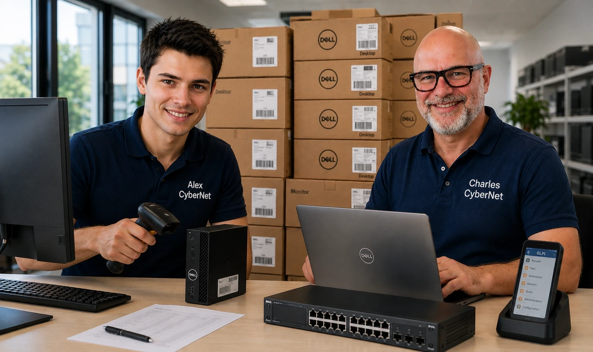

R2 • Pôle Installation et qualification • Le cours
✓Objectifs du cours
Objectifs du cours
À l’issue de ce cours, tu seras capable de :
- Distinguer les notions d’inventaire et de gestion de parc informatique
- Expliquer l’intérêt d’un outil centralisé de gestion (type GLPI)
- Identifier les méthodes d’inventaire manuel et automatique (dont SNMP)
- Décrire les fonctions principales d’un outil de gestion de parc
- Appréhender les liens entre matériels, utilisateurs, licences, contrats, tickets…
1Pourquoi une gestion de parc informatique ?
CyberNet assure la maintenance informatique de l'entreprise Armor Marine.
Cette entreprise possède :
- 42 ordinateurs
- 68 écrans
- 7 imprimantes
- 5 switches
- 2 serveurs
- 24 smartphones
Le technicien reçoit plusieurs demandes :
- Quel ordinateur est utilisé par Mme Martin ?
- Combien de PC sont encore sous garantie ?
- Quel switch est installé dans l'agence de Saint-Malo ?
- Combien de licences Microsoft 365 restent disponibles ?
- Quels ordinateurs doivent être remplacés cette année ?
Sans outil adapté, répondre à ces questions prend beaucoup de temps.
Un logiciel de gestion de parc permet de retrouver ces informations rapidement.
Je me teste
2Qu’est-ce qu’un parc informatique ?
Un parc informatique correspond à l’ensemble des ressources matérielles et logicielles d’une organisation :
- Ordinateurs, écrans, imprimantes, NAS, routeurs, switches…
- Logiciels installés, systèmes d’exploitation, licences…
- Utilisateurs (employés, techniciens…)
- Contrats (SAV, garantie…), services cloud, connexions télécoms…
La gestion de parc consiste à :
- Connaître l’existant (inventaire précis, à jour)
- Affecter les ressources aux utilisateurs ou aux services
- Gérer le cycle de vie (achat, usage, maintenance, recyclage)
- Faciliter la maintenance, le suivi des incidents et des renouvellements
Je me teste
3Pourquoi gérer un parc ?
Sans outil de gestion :-(
- Difficile de savoir qui utilise quoi
- Pas de suivi des pannes ni des historiques
- Problèmes de sécurité et de conformité
Avec un outil :-)
- Visibilité globale
- Gain de temps pour le support
- Suivi des garanties, contrats, interventions
- Moins d’erreurs humaines
Je me teste
4L’inventaire : base de tout
Il peut être :
- Manuel : fiche papier ou saisie à la main dans un logiciel
- Automatique :
- Agent logiciel installé sur chaque PC (ex : GLPI Agent)
- Protocole SNMP pour remonter les infos des switches, imprimantes, NAS…
💡 SNMP est un protocole standard utilisé pour inventorier et superviser des équipements réseaux. Il permet de récupérer automatiquement des informations comme :
- Adresse IP
- Modèle / fabricant
- Temps de fonctionnement
- Température, ports actifs, etc.
| Inventaire informatique | Gestion de parc informatique |
|---|---|
| Consiste à recenser les équipements. | Consiste à administrer l'ensemble des ressources informatiques. |
| Répond à la question : « Que possède l'entreprise ? » | Répond à la question : « Comment sont utilisées et suivies ces ressources ? » |
| Liste les matériels et les logiciels. | Gère les affectations, les contrats, les licences, les interventions, les réservations... |
| Constitue la base de la gestion de parc. | Utilise l'inventaire pour piloter le parc informatique. |
À retenir : sans inventaire fiable, il est impossible d'assurer une bonne gestion de parc.
Je me teste
5Exemple d’outil : GLPI
Au cours des prochains TP, nous apprendrons à utiliser progressivement les principales fonctions de GLPI :
- inventorier et identifier les équipements d’un parc informatique
- organiser les équipements par utilisateurs, groupes, lieux et entités
- automatiser l’inventaire avec GLPI Agent
- gérer différents types de ressources et leurs affectations
- suivre les contrats, les services et les réservations
- documenter les équipements réseau, leurs ports et leurs raccordements
- représenter et vérifier une architecture réseau avec Archires
Les grandes familles de fonctions de GLPI :
- Parc : ordinateurs, écrans, imprimantes, NAS, téléphones…
- Assistance : tickets incidents, demandes
- Gestion : contrats, licences, réservations
- Outils : rapports, alertes
- Administration : utilisateurs, groupes, profils, entités
- Configuration : plugins, options avancées
Je me teste
6Données importantes dans une fiche matériel
Voici quelques exemples d’informations utiles remontées automatiquement ou ajoutées manuellement :
- Fabricant / Modèle
- Numéro de série (important pour les garanties)
- Processeur (nom, fréquence, nombre de cœurs et de threads)
- RAM (quantité, fréquence, marque, modèle, ECC, ...)
- Disque dur (taille, espace libre, numéro de série)
- Écran (modèle et numéro de série, si renseigné)
- Système d’exploitation (Editeur, version, service pack)
- BIOS (version)
- Antivirus (nom + version des définitions)
Chaque matériel est :
- Affecté à un utilisateur (la personne qui s’en sert)
- Rattaché à une entité (ex. : une entreprise cliente ou une agence locale)
Entité : structure utilisée dans GLPI pour organiser et séparer les données d’une entreprise, d’un client, d’une agence ou d’un service.
Par exemple :
- CyberNet LA (entreprise principale)
- Menuiseries Rennaises (client à Rennes)
- Concession Cessonaise (client à Cesson-Sévigné) Cela permet de séparer les équipements et les utilisateurs de chaque client sans mélange.
Je me teste
7Liens entre les éléments du parc
Chaque élément peut être :
- Affecté à un utilisateur
- Rattaché à un groupe ou à une entité
- Associé à une licence ou un contrat
- Lié à un ticket d’incident ou de demande
- Inclus dans une réservation
Dans GLPI, un équipement peut être associé à plusieurs personnes ayant des rôles différents.
- Technicien responsable : technicien enregistré dans GLPI et chargé du suivi technique de l’équipement.
- Usager : compte utilisateur détecté automatiquement sur l’ordinateur lors de l’inventaire, par exemple chaoli@REN-PC-01.
- Utilisateur : personne enregistrée dans GLPI à laquelle le matériel est officiellement affecté.
Je me teste
8Réservations, services, contrats…
GLPI peut aussi gérer :
- Les réservations de salles, PC portables, vidéoprojecteurs…
- Les abonnements (fibre, téléphonie, cloud…)
- Les contrats de garantie, maintenance ou prestation
Je me teste
9Synthèse
| Élément géré | Exemple | Intérêt de la gestion |
|---|---|---|
| Ordinateur | PC portable ASUS ROG | Suivi technique, affectation |
| Imprimante | Brother MFC-L2750DW | Niveau de toner, localisation |
| Utilisateur | Marie Duval | Affectation de ressources |
| Licence | Microsoft 365 Business Premium | Suivi des renouvellements |
| Contrat | Garantie 3 ans DELL | Alerte avant l’échéance |
| Ticket | Panne clavier - poste 23 | Historique d’incident |
| Service cloud | Google Workspace / Dropbox Pro | Suivi des services payants |
| Salle de réunion | Salle 105 - Réservation hebdo | Organisation des ressources |
Je me teste
?Je vérifie mes connaissances
Exercice interactif complémentaire basé sur les notions du cours.
R2 • Inventaire et gestion de parc informatique